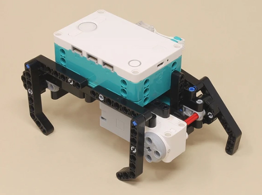

1-Motor Walker

1-Motor Walker | |
|---|---|
|  | This model makes a 4-leg walker using only one motor. It has the same dimensions and walking geometry as the 4-Motor Walker except with only one motor. Because all four legs move together at the same speed, gears and axles can be used to transmit the power from one motor to all four legs. However, unlike the 4-Motor Walker, it cannot turn, since all the motors always move together. |
|
|
Gears and axles are used to transmit the power of one motor to all four legs. |
Building Instructions |
|
|---|---|
 | 1-Motor Walker |
Programming |
|
|---|---|
 | 1-Motor Walker Programming.zip |
 | 1 1-Motor Walk.lms |
| 2 1-Motor RC.lms |
 |
1-Motor Walk
This very simple autonomous program just makes the robot walk forward at a fixed speed. Note that you can also control the motor using the built-in "Play" program on the hub and adjust the speed there. |
 |
1-Motor RC
This simple remote control program controls the motor speed with a slider. |